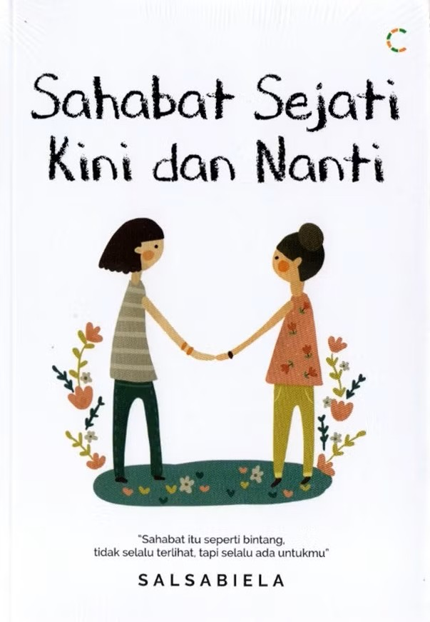
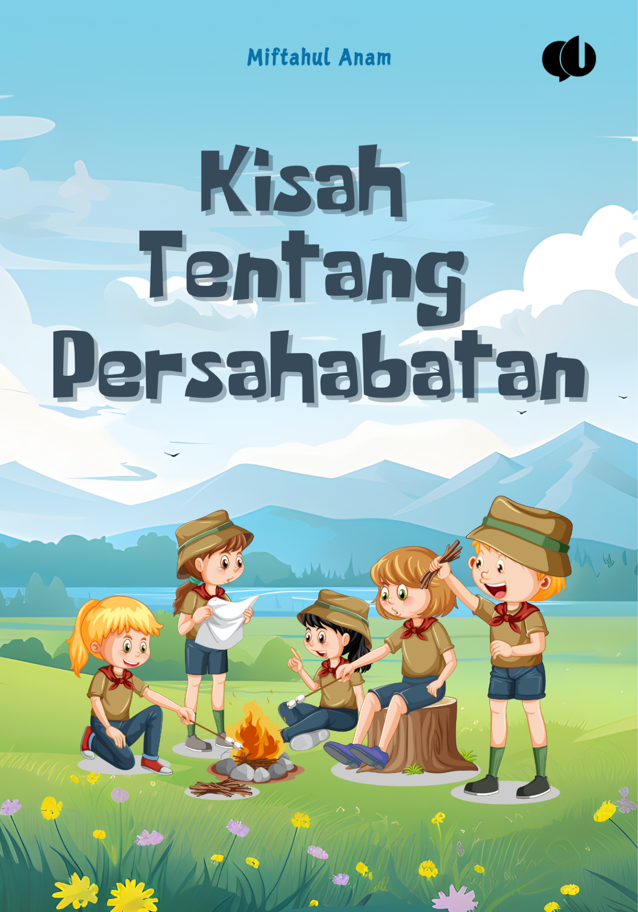

Eksplorasi ribuan pengetahuan dalam genggamanmu.

Kisah seru petualangan dan seluk-beluk dunia persahabatan 5 sahabat.

Karya inspiratif Miftahul Anam tentang arti mendalam dari sebuah komitmen pertemanan.
Kebiasaan Mampu Mengubah Takdir. Belajar teknologi & ulet kerja keras lewat komik kocak!
Menjelajahi rahasia tata surya kita yang luas luar biasa.